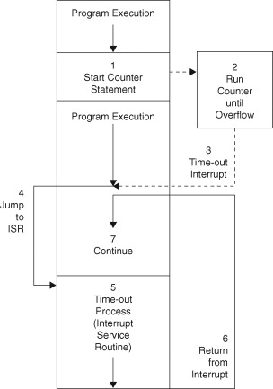
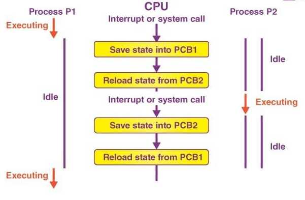
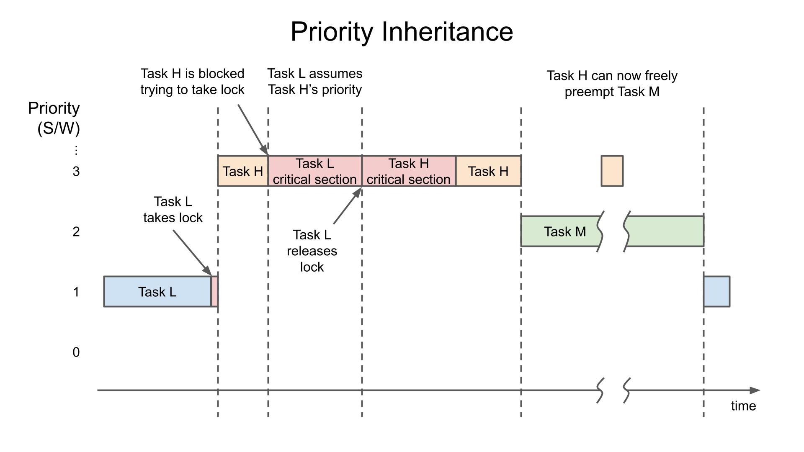

Optimized for Deterministic and Predictable Response Times to Time-Critical Tasks
Guaranteed execution times for critical tasks.
Dynamic task preemption to ensure high-priority task execution.
Support for both RMS and EDF algorithms.
Prevents priority inversion during resource sharing.
Minimal overhead during task switching.
Rapid response to hardware interrupts.
The RTOS uses a Task Control Block (TCB) to manage tasks. Each task has its own TCB containing:
The RTOS supports two types of scheduling algorithms:
Hardware timers track task execution times and deadlines, triggering interrupts when tasks need to be preempted or when external events occur.
When a task is preempted, the RTOS saves the current task state (Program Counter, Registers, Stack Pointer) and restores the state of the new task. This ensures smooth and efficient task switching.
To prevent priority inversion, the RTOS temporarily elevates the priority of a lower-priority task if it holds a resource required by a higher-priority task.
Definition: Task jitter refers to the variation in the actual start times of periodic tasks from their expected start times.
Importance: In real-time systems, minimizing jitter is crucial because time-sensitive tasks must be executed as close as possible to their expected schedule.
Definition: The time taken by the RTOS to switch from executing one task to another. It includes saving the state of the current task and loading the state of the next task.
Importance: Minimizing context switch time is essential for ensuring that the CPU spends more time executing tasks rather than switching between them.
Definition: The ratio of tasks that miss their deadlines to the total number of tasks. A task is said to miss its deadline if it does not complete execution before its deadline.
Importance: In hard real-time systems, missing a deadline can lead to system failure. This metric evaluates how well the scheduling algorithm ensures task completion within the defined deadlines.
Definition: CPU utilization refers to the percentage of time the CPU spends executing tasks versus idling or handling context switches.
Importance: Efficient CPU utilization is necessary to ensure that real-time tasks meet their deadlines while optimizing system performance. In RMS and EDF, utilization affects schedulability.